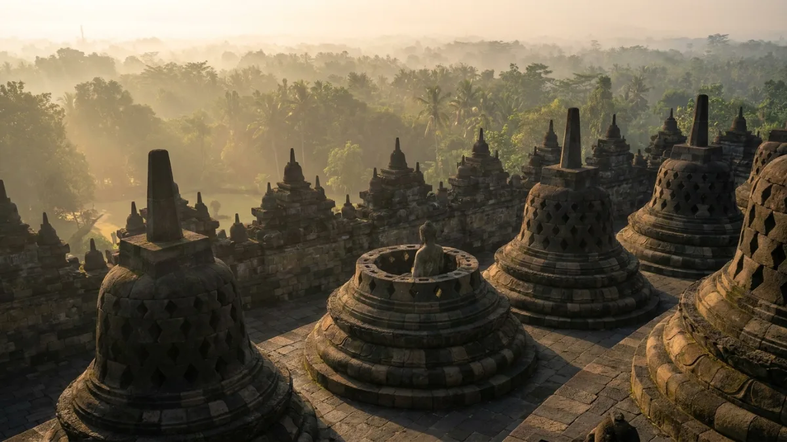
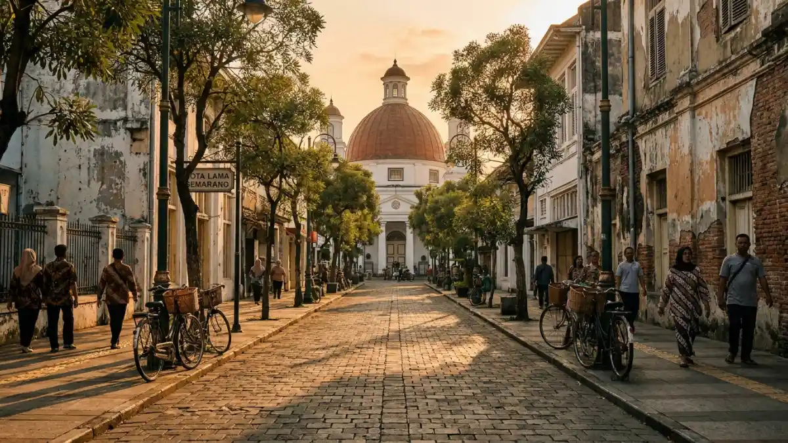

Ilustrasi Candi Borobudur di Magelang, salah satu ikon utama wisata Jawa Tengah.Wisata Jawa Tengah mencakup destinasi budaya, alam, dan sejarah seperti Borobudur, Dieng, dan Semarang, dengan tren kunjungan yang terus dipantau melalui data resmi setiap tahun.
- Apa Itu Wisata Jawa Tengah?
- Kenapa Sebagian Audiens Jawa Timur Tetap Membandingkan Wisata Jawa Tengah dan Jogja?
- Apa Saja Destinasi Wisata Jawa Tengah yang Paling Diminati?
- Bagaimana Cara Memilih Destinasi Wisata Jawa Tengah yang Tepat?
- Apa Manfaat Berwisata ke Jawa Tengah Dibandingkan Wilayah Lain?
- Apa Data Terbaru Kunjungan Wisatawan ke Jawa Tengah?
- Apa Kesalahan Umum yang Sering Dilakukan Wisatawan ke Jawa Tengah?
- Tips Praktis Berwisata ke Jawa Tengah
- Kesimpulan
Apa Itu Wisata Jawa Tengah?
Wisata Jawa Tengah adalah keseluruhan aktivitas kunjungan ke destinasi wisata di wilayah Provinsi Jawa Tengah, mencakup wisata budaya, alam, religi, dan kuliner yang tersebar di berbagai kabupaten dan kota.
Provinsi ini dikenal sebagai salah satu pusat peradaban Jawa kuno, sehingga banyak destinasinya berkaitan dengan sejarah dan warisan budaya.
Beberapa kawasan yang sering dikunjungi antara lain Candi Borobudur di Magelang, dataran tinggi Dieng di Wonosobo dan Banjarnegara, Kota Lama Semarang, serta kawasan keraton di Solo (Surakarta).
Selain wisata budaya, Jawa Tengah juga memiliki destinasi alam seperti pegunungan, pantai selatan, dan air terjun yang tersebar di berbagai kabupaten.
Kombinasi ini membuat wisata Jawa Tengah cocok untuk berbagai jenis wisatawan, mulai dari yang menyukai sejarah, alam terbuka, hingga kuliner tradisional.
Untuk siapa wisata Jawa Tengah relevan? Destinasi ini relevan untuk keluarga, rombongan pelajar, pasangan, maupun solo traveler, karena tersedia pilihan wisata dengan tingkat kesulitan dan anggaran yang beragam.
Kenapa Sebagian Audiens Jawa Timur Tetap Membandingkan Wisata Jawa Tengah dan Jogja?
Audiens Jawa Timur tetap membandingkan wisata Jawa Tengah dan Jogja karena kedua wilayah berbatasan langsung, memiliki jenis wisata yang mirip, dan sering menjadi satu paket perjalanan dalam satu kali liburan.
Secara geografis, Daerah Istimewa Yogyakarta (Jogja) berbatasan langsung dengan wilayah selatan Jawa Tengah, sehingga banyak wisatawan menganggap keduanya sebagai satu kawasan wisata yang menyatu, bukan dua wilayah administratif yang terpisah.
Kondisi ini membuat rute perjalanan dari Jawa Timur sering mencakup destinasi di kedua wilayah sekaligus, misalnya kombinasi Solo, Borobudur, dan Jogja dalam satu itinerary.
Faktor kedua adalah kemiripan jenis daya tarik. Baik Jawa Tengah maupun Jogja sama-sama menonjolkan wisata budaya Jawa, candi, dan kawasan heritage, sehingga wisatawan cenderung membandingkan pengalaman, harga tiket, dan kualitas fasilitas di antara keduanya sebelum menentukan pilihan.
Faktor ketiga adalah popularitas Jogja yang sudah lebih lama terbentuk sebagai destinasi wisata utama nasional.
Berdasarkan data Dinas Pariwisata DIY yang dikutip Tempo pada Januari 2026, kunjungan wisatawan ke DIY selama periode libur Natal dan Tahun Baru 2025 sampai 2026 mencapai lebih dari 2,2 juta orang, meningkat sekitar 50 persen dibandingkan periode yang sama tahun sebelumnya.
Popularitas ini membuat Jogja sering menjadi tolok ukur pembanding ketika wisatawan menilai destinasi di Jawa Tengah.
Apa Saja Destinasi Wisata Jawa Tengah yang Paling Diminati?
Destinasi wisata Jawa Tengah yang paling diminati mencakup Candi Borobudur, dataran tinggi Dieng, Kota Lama Semarang, kawasan keraton Solo, dan pantai selatan seperti kawasan Karimunjawa.
Candi Borobudur di Magelang menjadi ikon utama wisata Jawa Tengah karena statusnya sebagai situs warisan dunia UNESCO dan menjadi destinasi wisata religi sekaligus edukasi sejarah.
Kawasan ini biasanya dikunjungi bersamaan dengan Candi Prambanan yang secara administratif berada di perbatasan Jawa Tengah dan Jogja.
Dataran tinggi Dieng menawarkan wisata alam pegunungan dengan suhu udara yang relatif dingin, kawah vulkanik aktif, dan kompleks candi Hindu kuno. Kawasan ini populer untuk wisata alam dan fotografi lanskap.
Kota Lama Semarang menghadirkan wisata heritage kolonial dengan bangunan-bangunan tua yang telah direvitalisasi, cocok untuk wisata edukasi dan susur kota.
Sementara itu, kawasan keraton di Solo menonjolkan wisata budaya Jawa yang masih mempertahankan tradisi kesultanan.
Untuk wisata bahari, Kepulauan Karimunjawa di Kabupaten Jepara menawarkan pantai dan snorkeling yang menjadi alternatif wisata alam di luar destinasi budaya utama.

Ilustrasi suasana nostalgia Kota Lama Semarang, salah satu destinasi heritage di Jawa Tengah.Bagaimana Cara Memilih Destinasi Wisata Jawa Tengah yang Tepat?
Cara memilih destinasi wisata Jawa Tengah yang tepat adalah menyesuaikan jenis wisata yang diinginkan, jarak tempuh dari titik keberangkatan, musim kunjungan, dan anggaran yang tersedia.
Langkah pertama adalah menentukan jenis wisata yang menjadi prioritas, apakah budaya, alam, religi, atau kuliner.
Penentuan ini membantu mempersempit pilihan dari banyaknya destinasi yang tersebar di Jawa Tengah.
Langkah kedua adalah mempertimbangkan jarak tempuh. Wisatawan dari Jawa Timur umumnya memasuki Jawa Tengah melalui jalur Solo atau langsung menuju Jogja terlebih dahulu, sehingga penentuan titik masuk memengaruhi efisiensi rute perjalanan.
Langkah ketiga adalah memperhatikan musim kunjungan. Musim liburan sekolah dan periode Natal-Tahun Baru umumnya menjadi periode dengan tingkat kunjungan dan tingkat hunian hotel yang lebih tinggi, sehingga harga akomodasi cenderung naik pada periode tersebut.
Langkah keempat adalah menyesuaikan anggaran dengan durasi perjalanan. Semakin banyak destinasi yang dikunjungi dalam satu perjalanan, semakin penting perencanaan transportasi antar kota agar tidak terjadi pemborosan waktu dan biaya.
Apa Manfaat Berwisata ke Jawa Tengah Dibandingkan Wilayah Lain?
Manfaat berwisata ke Jawa Tengah dibandingkan wilayah lain terletak pada keragaman jenis destinasi dalam satu wilayah, biaya hidup yang relatif terjangkau, dan kedekatan lokasi dengan Jogja sebagai destinasi pelengkap.
Keragaman destinasi memungkinkan wisatawan menikmati wisata budaya, alam, dan kuliner tanpa harus berpindah provinsi.
Biaya hidup dan akomodasi di banyak kabupaten Jawa Tengah juga relatif lebih terjangkau dibandingkan destinasi wisata utama lain di Indonesia, meski biaya dapat bervariasi tergantung lokasi dan musim.
Kedekatan dengan Jogja menjadi nilai tambah karena wisatawan dapat menggabungkan dua wilayah dalam satu perjalanan tanpa menambah banyak waktu tempuh, sehingga satu kali liburan bisa mencakup lebih banyak destinasi.
Apa Data Terbaru Kunjungan Wisatawan ke Jawa Tengah?
Data terbaru menunjukkan kunjungan wisatawan nusantara ke Jawa Tengah pada Januari 2026 tercatat 11,95 juta perjalanan, turun 9,16 persen dibandingkan periode yang sama tahun 2025, menurut rilis resmi BPS Provinsi Jawa Tengah.
Selain jumlah kunjungan, tingkat hunian kamar (TPK) hotel berbintang di Jawa Tengah pada Januari 2026 tercatat sebesar 41,04 persen, turun 11,43 poin dibandingkan Desember 2025 yang mencapai 52,47 persen. Rata-rata lama menginap tamu hotel pada Januari 2026 tercatat 1,33 malam.
Penurunan pada awal tahun ini secara umum dipengaruhi oleh pola musiman, karena periode liburan akhir tahun yang biasanya mendorong lonjakan kunjungan telah berlalu memasuki Januari.
Wisatawan yang merencanakan kunjungan sebaiknya mempertimbangkan pola musiman ini agar dapat memperkirakan tingkat keramaian dan harga akomodasi secara lebih realistis.
Apa Kesalahan Umum yang Sering Dilakukan Wisatawan ke Jawa Tengah?
Kesalahan umum wisatawan ke Jawa Tengah meliputi tidak memperhitungkan jarak antar destinasi, memesan akomodasi terlalu mendekati tanggal kunjungan, dan mengabaikan variasi cuaca antar kawasan.
Jarak antar destinasi di Jawa Tengah cukup bervariasi, misalnya jarak dari Semarang menuju Dieng membutuhkan waktu tempuh yang tidak sebentar karena kondisi jalan pegunungan.
Wisatawan yang tidak memperhitungkan hal ini berisiko kehabisan waktu untuk mengunjungi destinasi berikutnya.
Pemesanan akomodasi yang terlalu mendekati tanggal kunjungan, terutama pada periode liburan panjang, berisiko membuat wisatawan kesulitan mendapatkan kamar dengan harga wajar karena tingkat hunian yang meningkat signifikan pada periode tersebut.
Variasi cuaca juga perlu diperhatikan, karena kawasan dataran tinggi seperti Dieng memiliki suhu udara yang jauh lebih dingin dibandingkan kawasan pesisir seperti Semarang, sehingga persiapan pakaian perlu disesuaikan.
Tips Praktis Berwisata ke Jawa Tengah
Berikut tips praktis yang dapat membantu perjalanan wisata ke Jawa Tengah berjalan lebih efisien dan nyaman.
- Tentukan prioritas destinasi sejak awal agar rute perjalanan lebih efisien dan tidak bolak-balik.
- Pesan akomodasi lebih awal, terutama jika bepergian pada musim liburan sekolah atau libur nasional.
- Siapkan pakaian yang sesuai dengan kondisi cuaca, terutama untuk kawasan dataran tinggi seperti Dieng.
- Pertimbangkan menggabungkan kunjungan ke Jogja jika rute perjalanan memungkinkan, karena jaraknya relatif dekat dengan sejumlah destinasi di Jawa Tengah.
- Cek jadwal event lokal atau musim tertentu yang dapat memengaruhi tingkat keramaian dan harga.
Kesimpulan
Wisata Jawa Tengah menawarkan kombinasi destinasi budaya, alam, dan kuliner yang dapat disesuaikan dengan berbagai jenis wisatawan.
Perbandingan dengan wisata Jogja tetap wajar dilakukan karena kedekatan wilayah dan kemiripan daya tarik, namun keduanya dapat dipadukan dalam satu perjalanan alih-alih dipilih salah satu.
Perencanaan yang memperhitungkan jarak, musim, dan anggaran akan membuat pengalaman berwisata ke Jawa Tengah lebih efisien dan minim kendala.
FAQ (Pertanyaan yang Sering Diajukan)